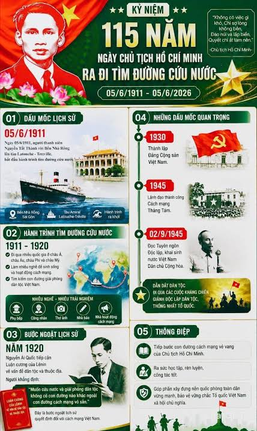

Trục thời gian sự kiện tiêu biểu
Khởi công và hoàn thành tòa nhà trụ sở hãng vận tải biển Messageries Impériales bên bờ sông Sài Gòn với biểu tượng đôi rồng trên đỉnh mái.
Công trình được lắp đặt hệ thống chiếu sáng bằng điện, phục vụ hoạt động điều hành thương cảng ngày càng sầm uất.
Người thanh niên Nguyễn Tất Thành (Văn Ba) rời Bến Nhà Rồng trên con tàu buôn Amiral Latouche-Tréville, mở đầu hành trình 30 năm tìm đường cứu nước.
Sau khi hãng tàu Pháp rút khỏi Đông Dương, công trình được tu bổ phần mái, thay biểu tượng mỏ neo – đầu ngựa bằng quả châu tạo hình "Lưỡng long chầu nguyệt".
Sau ngày đất nước thống nhất, Khu lưu niệm Chủ tịch Hồ Chí Minh tại Bến Nhà Rồng chính thức mở cửa đón khách tham quan.
Chuyển đổi thành Bảo tàng Hồ Chí Minh – Chi nhánh TP.HCM, trở thành "địa chỉ đỏ" giáo dục truyền thống lịch sử cho các thế hệ học sinh, sinh viên.
Ấn phẩm Infographic Dấu mốc lịch sử

Tóm tắt trực quan dành cho học sinh – sinh viên
Ấn phẩm Infographic giúp người xem nắm bắt nhanh 6 cột mốc quan trọng nhất của Bến Nhà Rồng chỉ trong 1 phút quan sát. Bạn có thể mở bản phóng to tại trang Thư viện.
Tiếp tục khám phá Kiến trúcNguồn tư liệu & Cập nhật: Biên niên sự kiện Bảo tàng Hồ Chí Minh – Chi nhánh TP.HCM. Cập nhật: Tháng 10/2026.